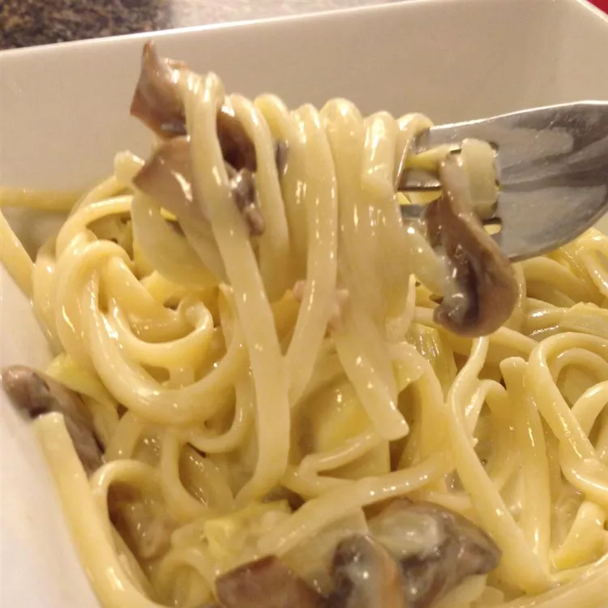

Linguini

Description
Marinated artichokes are the centerpiece in this pasta dish. Recipe can be doubled for a larger crowd.
Ingredients
- 1 (8 ounce) package linguini pasta
- 1 cup fresh sliced mushrooms
- ¼ cup chopped onion
- 2 tablespoons butter
- ⅛ teaspoon dried thyme
- 2 tablespoons all-purpose flour
- 1 (10.5 ounce) can condensed chicken broth
- 1 cup half-and-half cream
- 1 (6 ounce) can marinated artichoke hearts
- ¼ cup grated Parmesan cheese
Steps
- Cook linguini in a large pot of boiling salted water until tender.
- Meanwhile, saute mushrooms and onion in butter or margarine with thyme. Remove from heat. Stir in flour. Then
stir in chicken broth and half and half. Return to heat, and stir until the sauce boils and thickens. Strain
artichokes, and stir the liquid into the sauce. Add the fresh Parmesan.
- Drain linguini, and toss with sauce. Fold in the strained artichokes. Serve immediately.